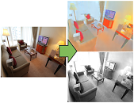
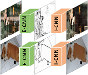
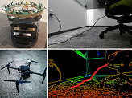
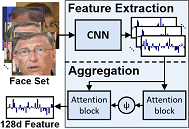
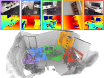
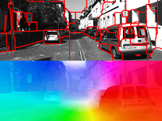
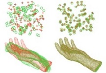
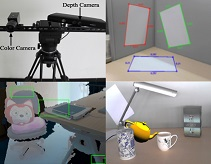
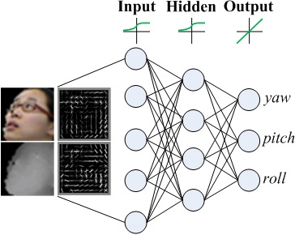

Ph.D. (Computer Science and Engineering)
Researcher
Visual Computing Group
Microsoft Research Asia (MSRA)
Microsoft Homepage
Jiaolong (蛟龙): the given name from my parents. "Jiaolong" is an aquatic dragon in Chinese ancient legends with great power. It can be pronounced as "chiao-lung".
Yang (杨): the family name from my forefathers, the sixth most common surname in China. It can be pronounced as the word "young" with a rising tone.
[07/17/2017] The deep reflection removal paper is accepted by ICCV'17
[03/18/2017] The video face recognition paper is accepted by CVPR'17
Before joining MSRA in Sep 2016, I received dual PhD degrees from The Australian National University (ANU) and Beijing Institute of Technology (BIT) in 2016. I was a research intern at MSRA from Nov 2015 to Mar 2016, and was an visiting graduate researcher at Harvard University between Jul 2016 and Aug 2016.
|  |
Qingnan Fan*, Jiaolong Yang, Gang Hua, Baoquan Chen and David Wipf Revisiting Deep Intrinsic Image Decompositions The 34th IEEE Conference on Computer Vision and Pattern Recognition (CVPR2018), Salt Lake City, USA (Oral) [Abstract] [BibTex] [PDF] [Code] [Supplementary Material] (*: Intern at MSRA) |
|
While invaluable for many computer vision applications, decomposing a natural image into intrinsic reflectance and shading layers represents a challenging, underdetermined inverse problem. As opposed to strict reliance on conventional optimization or filtering solutions with strong prior assumptions, deep learning-based approaches have also been proposed to compute intrinsic image decompositions when granted access to sufficient labeled training data. The downside is that current data sources are quite limited, and broadly speaking fall into one of two categories: either dense fully-labeled images in synthetic/narrow settings, or weakly-labeled data from relatively diverse natural scenes. In contrast to many previous learning-based approaches, which are often tailored to the structure of a particular dataset (and may not work well on others), we adopt core network structures that universally reflect loose prior knowledge regarding the intrinsic image formation process and can be largely shared across datasets. We then apply flexibly supervised loss layers that are customized for each source of ground truth labels. The resulting deep architecture achieves state-of-the-art results on all of the major intrinsic image benchmarks, and runs considerably faster than most at test time.
%Deep learning based approaches have been inspired with access to weakly labeled pairwise comparisons or densely labeled images in various different datasets. In this paper, we are the first to propose a universal framework that's capable of achieving state-of-the-art performance among the major intrinsic benchmarks with flexibly supervised loss layers. We also provide the first end-to-end trainable system that can produce flattening dense intrinsic images with the more challenging pairwise reflectance difference labels, which can be learned once without extra pre- or post- processing. Our intrinsic images are coarsely estimated by a direct intrinsic network, and further flattened by a recursive 1D domain filter using our learned sparse guidance map. Compared to most other state-of-the-art intrinsic image estimation papers, our algorithm also runs considerably faster for evaluation.
@inproceedings{fan2018revisiting,
author = {Fan, Qingnan and Yang, Jiaolong and Hua, Gang and Chen, Baoquan and Wipf, David}, title = {Revisiting Deep Intrinsic Image Decompositions}, booktitle = {Proceedings of the 34th IEEE Conference on Computer Vision and Pattern Recognition (CVPR)}, year = {2018} } |
|
|  |
Qingnan Fan*, Jiaolong Yang, Gang Hua, Baoquan Chen and David Wipf A Generic Deep Architecture for Single Image Reflection Removal and Image Smoothing The 16th International Conference on Computer Vision (ICCV2017), Venice, Italy [Abstract] [BibTex] [PDF] [Code] [Supplementary Material] [arXiv] (*: Intern at MSRA) |
|
This paper proposes a deep neural network structure that exploits edge information in addressing representative low-level vision tasks such as layer separation and image filtering. Unlike most other deep learning strategies applied in this context, our approach tackles these challenging problems by estimating edges and reconstructing images using only cascaded convolutional layers arranged such that no handcrafted or application-specific image-processing components are required. We apply the resulting transferrable pipeline to two different problem domains that are both sensitive to edges, namely, single image reflection removal and image smoothing. For the former, using a mild reflection smoothness assumption and a novel synthetic data generation method that acts as a type of weak supervision, our network is able to solve much more difficult reflection cases that cannot be handled by previous methods. For the latter, we also exceed the state-of-the-art quantitative and qualitative results by wide margins. In all cases, the proposed framework is simple, fast, and easy to transfer across disparate domains.
@inproceedings{fan2017generic,
author = {Fan, Qingnan and Yang, Jiaolong and Hua, Gang and Chen, Baoquan and Wipf, David}, title = {A Generic Deep Architecture for Single Image Reflection Removal and Image Smoothing}, booktitle = {Proceedings of the 16th International Conference on Computer Vision (ICCV)}, pages = {3238-3247}, year = {2017} } |
|
|  |
Chen Zhou*, Jiaolong Yang, Chunshui Zhao and Gang Hua Fast, Accurate Thin-Structure Obstacle Detection for Autonomous Mobile Robots IEEE Computer Vision and Pattern Recognition Workshop on Embedded Vision (CVPRW2017), Honolulu, USA [Abstract] [BibTex] [PDF] [arXiv] (*: Intern at MSRA) |
|
Safety is paramount for mobile robotic platforms such as self-driving cars and unmanned aerial vehicles. This work is devoted to a task that is indispensable for safety yet was largely overlooked in the past -- detecting obstacles that are of very thin structures, such as wires, cables and tree branches. This is a challenging problem, as thin objects can be problematic for active sensors such as lidar and sonar and even for stereo cameras. In this work, we propose to use video sequences for thin obstacle detection. We represent obstacles with edges in the video frames, and reconstruct them in 3D using efficient edge-based visual odometry techniques. We provide both a monocular camera solution and a stereo camera solution. The former incorporates Inertial Measurement Unit (IMU) data to solve scale ambiguity, while the latter enjoys a novel, purely vision-based solution. Experiments demonstrated that the proposed methods are fast and able to detect thin obstacles robustly and accurately under various conditions.
@inproceedings{yang2017neural,
author = {Zhou, Chen and Yang, Jiaolong and Zhao, Chunshui and Hua, Gang}, title = {Fast, Accurate Thin-Structure Obstacle Detection for Autonomous Mobile Robots}, booktitle = {The IEEE Conference on Computer Vision and Pattern Recognition (CVPR) Workshops}, pages = {1-10}, year = {2017} } |
|
|  |
Jiaolong Yang, Peiran Ren, Dongqing Zhang, Dong Chen, Fang Wen, Hongdong Li and Gang Hua Neural Aggregation Network for Video Face Recognition The 33th IEEE Conference on Computer Vision and Pattern Recognition (CVPR2017), Honolulu, USA [Abstract] [BibTex] [PDF] [arXiv] |
|
We present a Neural Aggregation Network (NAN) for video face recognition. The network takes a face video or face image set of a person with a variable number of face images as its input, and produces a compact and fixed-dimension feature representation. The whole network is composed of two modules. The feature embedding module is a deep Convolutional Neural Network (CNN), which maps each face image into a feature vector. The aggregation module consists of two attention blocks driven by a memory storing all the extracted features. It adaptively aggregates the features to form a single feature inside the convex hull spanned by them. Due to the attention mechanism, the aggregation is invariant to the image order. We found that NAN learns to advocate high-quality face images while repelling low-quality ones such as blurred, occluded and improperly exposed faces. The experiments on IJB-A, YouTube Face, Celebrity-1000 video face recognition benchmarks show that it consistently outperforms standard aggregation methods and achieves state-of-the-art accuracies.
@inproceedings{yang2017neural,
author = {Yang, Jiaolong and Ren, Peiran and Zhang, Dongqing and Chen, Dong and Wen, Fang and Li, Hongdong and Hua, Gang}, title = {Neural Aggregation Network for Video Face Recognition}, booktitle = {Proceedings of the 32th IEEE Conference on Computer Vision and Pattern Recognition (CVPR)}, pages = {4362-4371}, year = {2017} } |
|

|
Jiaolong Yang, Hongdong Li, Yuchao Dai and Robby T. Tan Robust Optical Flow Estimation of Double-Layer Images under Transparency or Reflection The 32th IEEE Conference on Computer Vision and Pattern Recognition (CVPR2016), Las Vegas, USA [Abstract] [BibTex] [PDF] [Code] [Supplementary Material] |
|
This paper deals with a challenging, frequently encountered, yet not properly investigated problem in two-frame optical flow estimation. That is, the input frames are compounds of two imaging layers - one desired background layer of the scene, and one distracting, possibly moving layer due to transparency or reflection. In this situation, the conventional brightness constancy constraint - the cornerstone of most existing optical flow methods - will no longer be valid. In this paper, we propose a robust solution to this problem. The proposed method performs both optical flow estimation, and image layer separation. It exploits a generalized double-layer brightness consistency constraint connecting these two tasks, and utilizes the priors for both of them. Experiments on both synthetic data and real images have confirmed the efficacy of the proposed method. To the best of our knowledge, this is the first attempt towards handling generic optical flow fields of two-frame images containing transparency or reflection.
@inproceedings{yang2016robust,
author = {Yang, Jiaolong and Li, Hongdong and Dai, Yuchao and Tan, Robby T.}, title = {Robust Optical Flow Estimation of Double-Layer Images under Transparency or Reflection}, booktitle = {Proceedings of the 32th IEEE Conference on Computer Vision and Pattern Recognition (CVPR)}, pages = {1410-1419}, year = {2016} } |
|
|  |
Jiaolong Yang, Hongdong Li, Dylan Campbell and Yunde Jia Go-ICP: A Globally Optimal Solution to 3D ICP Point-Set Registration IEEE Transactions on Pattern Analysis and Machine Intelligence (T-PAMI), 2016 [Abstract] [BibTex] [PDF] [Code] [Webpage] [Supplementary Material] |
|
The Iterative Closest Point (ICP) algorithm is one of the most widely used methods for point-set registration. However, being based on local iterative optimization, ICP is known to be susceptible to local minima. Its performance critically relies on the quality of the initialization and only local optimality is guaranteed. This paper presents the first globally optimal algorithm, named Go-ICP, for Euclidean (rigid) registration of two 3D point-sets under the L2 error metric defined in ICP. The Go-ICP method is based on a branch-and-bound (BnB) scheme that searches the entire 3D motion space SE(3). By exploiting the special structure of SE(3) geometry, we derive novel upper and lower bounds for the registration error function. Local ICP is integrated into the BnB scheme, which speeds up the new method while guaranteeing global optimality. We also discuss extensions, addressing the issue of outlier robustness. The evaluation demonstrates that the proposed method is able to produce reliable registration results regardless of the initialization. Go-ICP can be applied in scenarios where an optimal solution is desirable or where a good initialization is not always available.
@article{yang2016goicp,
author = {Yang, Jiaolong and Li, Hongdong and Campbell, Dylan and Jia, Yunde}, title = {Go-ICP: A Globally Optimal Solution to 3D ICP Point-Set Registration}, journal = {IEEE Transactions on Pattern Analysis and Machine Intelligence (T-PAMI)}, volume = {38}, number = {11}, pages = {2241--2254}, year = {2016} } |
|
|  |
Jiaolong Yang and Hongdong Li Dense, Accurate Optical Flow Estimation with Piecewise Parametric Model The 31th IEEE Conference on Computer Vision and Pattern Recognition (CVPR2015), Boston, USA [Abstract] [BibTex] [PDF] [Code] [Extended Abstract] [Supplementary Material] |
|
This paper proposes a simple method for estimating dense and accurate optical flow field. It revitalizes an early idea of piecewise parametric flow model. A key innovation is that we fit a flow field piecewise to a variety of parametric models, where the domain of each piece (i.e., each piece's shape, position and size) as well as the total number of pieces are determined adaptively, while at the same time maintaining a global inter-piece flow continuity constraint. We achieve this by a multi-model fitting scheme via energy minimization. Our energy takes into account both the piecewise constant model assumption, and the flow field continuity constraint. The proposed method effectively handles both homogeneous regions and complex motion. Experiments on three public optical flow benchmarks (KITTI, MPI Sintel, and Middlebury) show the superiority of our method compared with the state of the art: it achieves top-tier performances on all the three benchmarks.
@inproceedings{yang2015dense,
author = {Yang, Jiaolong and Li, Hongdong}, title = {Dense, Accurate Optical Flow Estimation with Piecewise Parametric Model}, booktitle = {Proceedings of the 31th IEEE Conference on Computer Vision and Pattern Recognition (CVPR)}, pages = {1019-1027}, year = {2015} } |
|

|
Jiaolong Yang, Hongdong Li and Yunde Jia Optimal Essential Matrix Estimation via Inlier-Set Maximization The 13th European Conference on Computer Vision (ECCV2014), Zürich, Switzerland Received a Student Conference Grant [Abstract] [BibTex] [PDF] [Code] [Data] |
|
In this paper, we extend the globally optimal "rotation space search" method [11] to essential matrix estimation in the presence of feature mismatches or outliers. The problem is formulated as inlier-set cardinality maximization, and solved via branch-and-bound global optimization which searches the entire essential manifold formed by all essential matrices. Our main contributions include an explicit, geometrically meaningful essential manifold parametrization using a 5D direct product space of a solid 2D disk and a solid 3D ball, as well as efficient closed-form bounding functions. Experiments on both synthetic data and real images have confirmed the efficacy of our method. The method is mostly suitable for applications where robustness and accuracy are paramount. It can also be used as a benchmark for method evaluation.
@inproceedings{yang2014optimal,
author = {Yang, Jiaolong and Li, Hongdong and Jia, Yunde}, title = {Optimal Essential Matrix Estimation via Inlier-Set Maximization}, booktitle = {Proceedings of the 14th European Conference on Computer Vision (ECCV)}, pages = {111-126}, year = {2014} } |
|
|  |
Jiaolong Yang, Hongdong Li and Yunde Jia Go-ICP: Solving 3D Registration Efficiently and Globally Optimally The 14th International Conference on Computer Vision (ICCV2013), Sydney, Australia [Abstract] [BibTex] [PDF] [Code] [Webpage] |
|
Registration is a fundamental task in computer vision. The Iterative Closest Point (ICP) algorithm is one of the widely-used methods for solving the registration problem. Based on local iteration, ICP is however well-known to suffer from local minima. Its performance critically relies on the quality of initialization, and only local optimality is guaranteed. This paper provides the very first globally optimal solution to Euclidean registration of two 3D pointsets or two 3D surfaces under the L2 error. Our method is built upon ICP, but combines it with a branch-and-bound (BnB) scheme which searches the 3D motion space SE(3) efficiently. By exploiting the special structure of the underlying geometry, we derive novel upper and lower bounds for the ICP error function. The integration of local ICP and global BnB enables the new method to run efficiently in practice, and its optimality is exactly guaranteed. We also discuss extensions, addressing the issue of outlier robustness.
@inproceedings{yang2013goicp,
author = {Yang, Jiaolong and Li, Hongdong and Jia, Yunde}, title = {Go-ICP: Solving 3D Registration Efficiently and Globally Optimally}, booktitle = {Proceedings of the 14th International Conference on Computer Vision (ICCV)}, pages = {1457-1464}, year = {2013} } |
|
|  |
Jiaolong Yang, Yuchao Dai, Hongdong Li, Henry Gardner and Yunde Jia Single-shot Extrinsic Calibration of a Generically Configured RGB-D Camera Rig from Scene Constraints The 12th International Symposium on Mixed and Augmented Reality (ISMAR2013), Adelaide, Australia Regular Paper with Oral Presentation [Abstract] [BibTex] [PDF] [Slides] |
|
With the increasingly popular use of commodity RGB-D cameras for computer vision, robotics, mixed and augmented reality and other areas, it is of significant practical interest to calibrate the relative pose between a depth (D) camera and an RGB camera in these types of setups. In this paper, we propose a new single-shot, correspondence-free method to extrinsically calibrate a generically configured RGB-D camera rig. We formulate the extrinsic calibration problem as one of geometric 2D-3D registration which exploits scene constraints to achieve single-shot extrinsic calibration. Our method first reconstructs sparse point clouds from single view 2D image, which are then registered with dense point clouds from the depth camera. Finally, we directly optimize the warping quality by evaluating scene constraints in 3D point clouds. Our single-shot extrinsic calibration method does not require correspondences across multiple color images or across modality, achieving greater flexibility over existing methods. The scene constraints required by our method can be very simple and we demonstrate that a scene made up of three sheets of paper is sufficient to obtain reliable calibration and with lower geometric error than existing methods.
@inproceedings{yang2013single,
author = {Yang, Jiaolong and Dai, Yuchao and Li, Hongdong and Gardner, Henry and Jia, Yunde}, title = {Single-shot Extrinsic Calibration of a Generically Configured RGB-D Camera Rig from Scene Constraints}, booktitle = {Proceedings of the 12th International Symposium on Mixed and Augmented Reality (ISMAR)}, pages = {181-188}, year = {2013} } |
|
|  |
Jiaolong Yang, Wei Liang and Yunde Jia Face Pose Estimation with Combined 2D and 3D HOG Features The 21st International Conference on Pattern Recognition (ICPR2012), Tsukuba, Japan [Abstract] [BibTex] [PDF] |
|
In this paper, a new stereo camera calibration technique that can realize automatic strong calibration is proposed. In order to achieve online camera calibration, an object covered with chess-board patterns, called embedded calibration device, is placed inside the cavity of the stereovision system. We estimate the structural configuration of the embedded calibration device, i.e. the 3D positions of all the grid points on the device, to calibrate the cameras. Since the device is close to the stereo camera, the calibration results are usually not valid for the volume around the object in the scene. Therefore we present a correction approach combining the embedded calibration and scene features to make the calibration valid in the scene. Experimental results demonstrate that our system performs robust and accurate, and is very applicable in unmanned systems.
@inproceedings{yang2012face,
author = {Yang, Jiaolong and Liang, Wei and Jia, Yunde}, title = {Face Pose Estimation with Combined 2D and 3D HOG Features}, booktitle = {Proceedings of the 21st International Conference on Pattern Recognition (ICPR)}, pages = {2492-2495}, year = {2012} } |
- Xiameng Qin, Jiaolong Yang, Wei Liang, Mingtao Pei and Yunde Jia. Stereo Camera Calibration with an Embedded Calibration Device and Scene Features. IEEE International Conference on Robotics and Biomimetics (ROBIO), pp. 2306-2310, 2012.
- Jiaolong Yang, Lei Chen and Yunde Jia. Human-robot Interaction Technique Based on Stereo Vision. Chinese Conference on Human Computer Interaction (CHCI), pp. 226-231, 2011. (in Chinese)
- Jiaolong Yang, Lei Chen and Wei Liang. Monocular Vision based Robot Self-localization. IEEE International Conference on Robotics and Biomimetics (ROBIO), pp. 1189-1193, 2010.
- Lei Chen, Mingtao Pei and Jiaolong Yang. Multi-Scale Matching for Data Association in Vision-based SLAM. IEEE International Conference on Robotics and Biomimetics (ROBIO), pp. 1183-1188, 2010.
IEEE Conference on Computer Vision and Pattern Recognition (CVPR), 2015, 2016, 2017, 2018
International Conference on Computer Vision (ICCV), 2015, 2017
European Conference on Computer Vision (ECCV), 2014, 2016, 2018
IEEE/RSJ International Conference on Intelligent Robots and Systems (IROS), 2017
ACM International Conferece on Multimedia (MM), 2017
SIGGRAPH, 2018
Journal Reviewer:
IEEE Transactions on Pattern Analysis and Machine Intelligence (TPAMI)
IEEE Transactions on Image Processing (T-IP)
IEEE Transactions on Circuits and Systems for Video Technology (T-CSVT)
IEEE Transactions on Robotics (T-RO)
IEEE Transactions on Multimedia (T-MM)
IEEE Transactions on Cybernetics (T-CYB)
IEEE Transactions on Intelligent Transportation Systems (T-ITS)
IEEE Signal Processing Letters (SPL)
Computer Vision and Image Understanding (CVIU)
Machine Vision and Applications (MVA)
- China Society of Image and Graphics (中国图形图像学会) Excellent PhD Thesis Award, 2017
- Excellent BIT PhD Thesis Award (with exceptional award to supervisor, 0.6%), 2016
- Excellent Intern Award, Microsoft Research, 2016
- ANU Postgraduate Research Scholarship, 2015
- Huawei Fellowship, 2014
- National Scholarship for Graduate Students, 2013
- Chinese Government Scholarship, 2013
- National Scholarship for Graduate Students, 2012